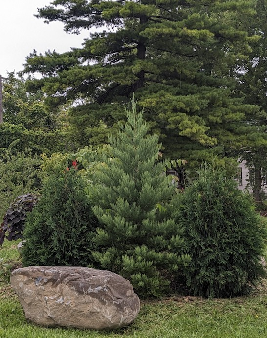

The Giant Sequoia Forest
A key initiative is the partnership with Archangel Ancient Tree Archive and Poletown East residents to create a Giant Sequoia Forest in Detroit, with MoKirby Park serving as Arboretum Detroit's most concentrated planting site.
This project highlights Arboretum Detroit's commitment to resilient forests, healthy soils, and community-driven ecological restoration.
Students and community members actively participate in planting Giant Sequoias, gaining hands-on experience in tree stewardship and ecological restoration. Through activities like these, Arboretum Detroit connects the community to the process of growing a future urban forest while inspiring the next generation of environmental stewards.

Eight-year-old Giant Sequoia trees at Treetroit Two.